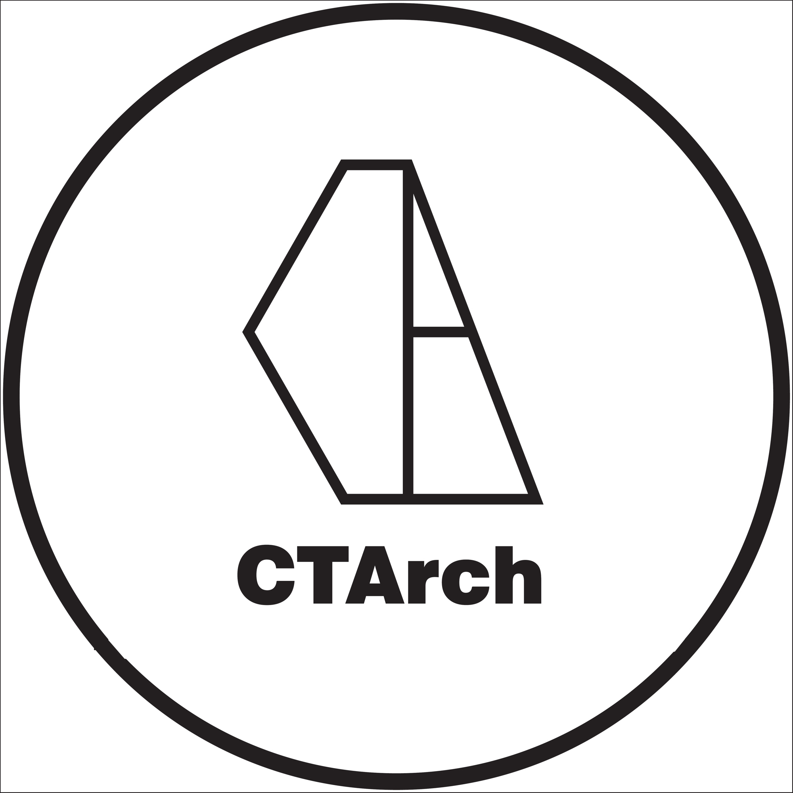

THE LEARNING ARCHIPELAGO01 — 03三個主題，一起走進實務。
正在搭建你的空港城…
目前無法顯示 3D 場景，仍可由右方或下方清單探索全部課程。
CTArch 原創互動場景 ✦ 建築 × 創作 × 工作流程
左鍵平移 · 中鍵旋轉 · 滾輪縮放
建築人的三大 AI 實作航線
築匠 AI 空港城
從圖像、影片，到真正能用的工具。
選一棟建築，閱讀上課摘要。

築匠建築師事務所CTArch · AI AIRPORT CITY正在搭建你的空港城…
從圖像、影片，到真正能用的工具。
選一棟建築，閱讀上課摘要。